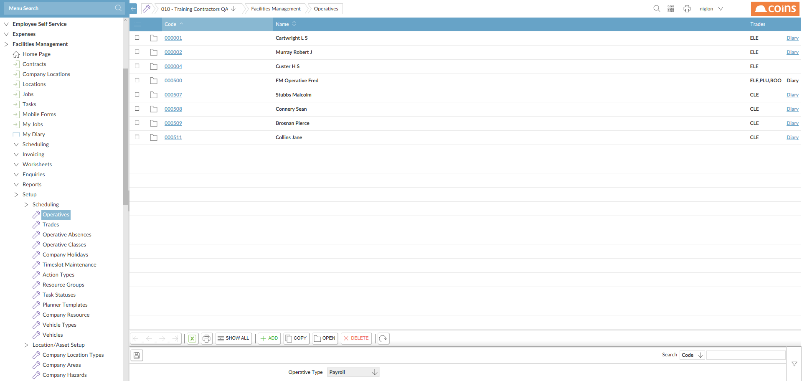
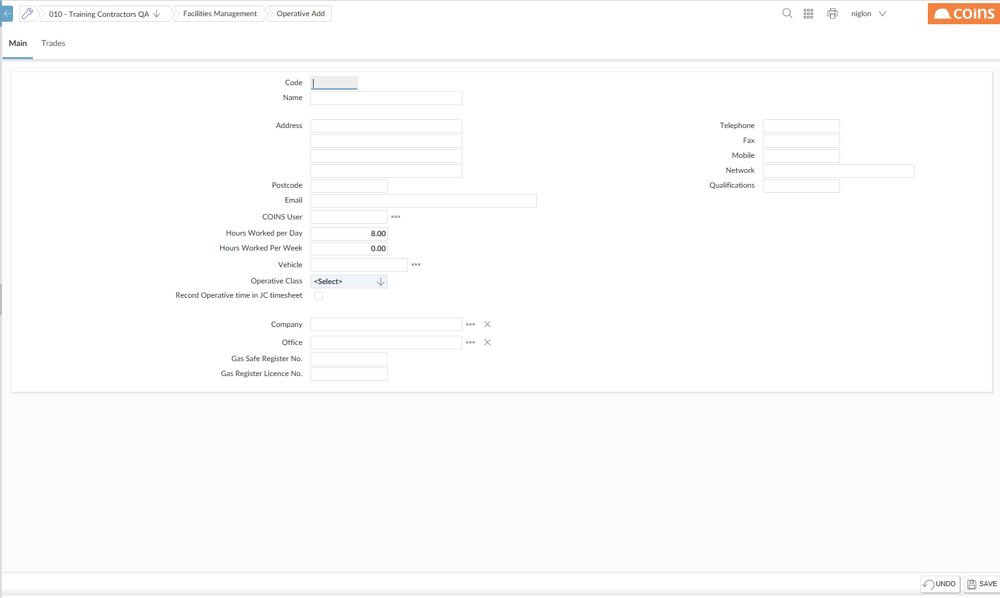
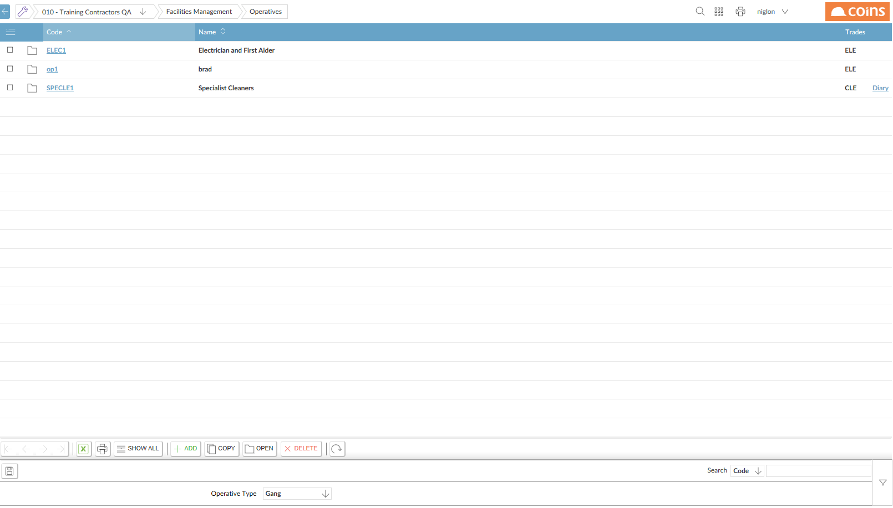

To set up a
- Go to FM > Setup > Scheduling >

- Select
 .
. - Click
 .
.

- In the Code field, enter a code and name for the new
- Complete the
- For the address, you can enter the address where the
- Enter a
- On the Trades tab,
- Click
 .
.

- Click the link in the Code column.
- On the .
 .
.